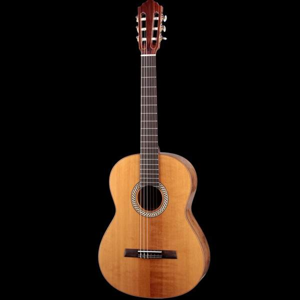

--- 
layout: default 
title: Classical Guitars 
---

<div class="references_container">
 
    <h1>The Classical guitar</h1>
  
   
   
    <p>The classical guitar (also known as concert guitar, classical acoustic, nylon-string guitar, or Spanish guitar) is the member of the guitar family used in classical music. It is an acoustical wooden guitar with strings made of nylon, rather than the metal strings used in acoustic and electric guitars. The traditional classical guitar has twelve frets clear of the body and is held on the left leg, so that the hand that plucks or strums the strings does so near the back of the soundhole (this is called the classical position). The modern steel string guitar, on the other hand, usually has fourteen frets clear of the body (see Dreadnought) and is commonly played off the hip.</p>

    <p>The phrase "classical guitar" may refer to either of two concepts other than the instrument itself:</p>

    <ul>
        <li>
            the instrumental finger technique common to classical guitar—individual strings plucked with the fingernails or, rarely, fingertips.
        </li>
        <li>
            the instrument's classical music repertoir
        </li>
    </ul>
    <p>The term <em>modern classical guitar</em> is sometimes used to distinguish the classical guitar from older forms of guitar, which are in their broadest sense also called <em>classical</em>, or more specifically, <em>early guitars</em>. Examples of early guitars include the six-string early romantic guitar (c. 1790–1880), and the earlier baroque guitars with five courses.</p>

    <p>The materials and the methods of classical guitar construction may vary, but the typical shape is either <em>modern classical guitar</em> or that <em>historic classical guitar</em> similar to the early romantic guitars of France and Italy. Classical guitar strings once made of gut are now made of such polymers as nylon, with fine silver wire wound about the acoustically lower (bass side) strings.</p>

    <p>A guitar family tree may be identified. The flamenco guitar derives from the modern classical, but has differences in material, construction and sound.</p>
    
    <p>Today's <em>modern classical guitar</em> was established by the late designs of the 19th-century Spanish luthier, Antonio Torres Jurado.</p>
</div>